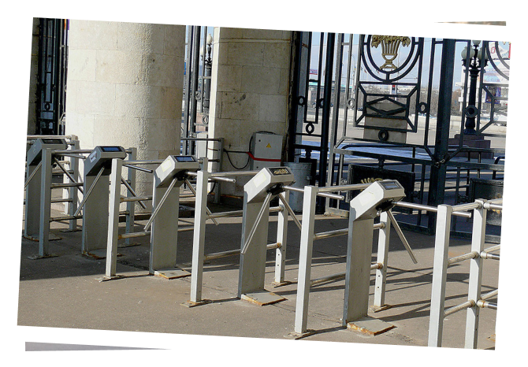

Переверните устройство!
Тест
Вы уверены, что знаете Москву? Докажите это!
Вопрос 1 из 10
Какая это улица до реализации «adblock кампании»?

Мясницкая
Арбат
Маросейка
Это точно Москва?
Березовая роща
Нет. Совсем уж забыли, старички, а это была Маросейка.
Маросейка
Верно! Маросейку теперь не узнать, правда?
Вопрос 2 из 10
Что стало главной достопримечательностью в этом долгострое?
Стена Белого города
Башня «Восток»
Фонтан на ВДНХ
Сами строители
Цены на недвижимость
Хорошая попытка, но это стена Белого города
Стена Белого города
О, да! Уже были там?
Вопрос 3 из 10
Для кого построили отдельный павильон после реконструкции Крымской набережной?
Для пловцов
Фанатам памятника Петру I
Для художников
Для детей
Неправильный ответ
Неправильно, для художников. И рядом ведь ЦДХ.
Для художников
Правильно. Теперь и зимой тепло будет выбирать картины.
Вопрос 4 из 10
Как называется этот торговый объект на Лубянке до реконструкции?
Центральный детский мир
Метро 2033
Книжный магазин
Торговый центр «Наутилус»
Неправильный ответ
Ха! Нет, это культовый Центральный детский мир.
Центральный детский мир
Ну конечно! Тот самый Центральный детский мир.
Вопрос 5 из 10
Памятник какому писателю вернули на площадь Тверская застава?
Корней Чуковский
Василий Быков
Максим Горький
Сергей Михалков
Неправильный ответ
Нет, это Максим Горький. Памятник вернули из парка Музеон.
Центральный детский мир
Все верно! С 2005 года памятник Горькому ждал возвращения.
Вопрос 6 из 10
Куда раньше вел этот проход через турникет?

Парк Горького
Стадион «Лужники»
В Московскую область
Коломенский парк
Неправильный ответ
Счастливые! Не помните уже, что это был Парк Горького.
Центральный детский мир
Верно! Это Парк Горького. Смутные времена были...
Вопрос 7 из 10
Какая достопримечательность до реставрации?
Московский Планетарий
Метро «Ботанический сад»
Все-таки стадион «Лужники»
Павильон Космос на ВДНХ!
Неправильный ответ
Совсем нет, так выглядел Московский Планетарий
Центральный детский мир
Верно! Это наше астрономическое сердце Москвы — Планетарий
Вопрос 8 из 10
Что это за здание до реставрации?
Теперь уж точно Космос на ВДНХ!
Московский ипподром
Усадьба Марьино
Охотничий домик Трубецких
Неправильный ответ
Не узнали павильон Космос, ну еще бы!
Центральный детский мир
Да, это павильон Космос, сходите!
Вопрос 9 из 10
Что это за улица до обустройства?
Проспект Мира
Рязанский проспект
Новый Арбат
Шоссе Энтузиастов
Неправильный ответ
Нет, это Новый Арбат, теперь уже действительно новый
Центральный детский мир
Правильно, это Новый Арбат и новый маршрут для прогулок
Вопрос 10 из 10
Как узнать когда приедет следующий автобус?
Почувствовать
Посмотреть на табло
Прикинуть в уме
На все воля Божья!
Неправильный ответ
Очень смешно, но нет. Просто гляньте на табло.
Центральный детский мир
Да, а скоро только такие остановки и будут!
Ваш результат 0/10

Привет из будущего! Мы вас удивим: кепки уже не в моде, но в центре Москвы появилась ледяная пещера!
Хотите еще попытку с другими вопросами?
Приходите на день города в своем районе!
Вопрос 1 из 8
Какого вида ландшафта нет в парке Зарядье?
Степь-матушка
Дубравушка
Березовая роща
Лужок
Березовая роща
Увы, это не так. Правильный ответ — дубравушка. Мы сами были удивлены.
Маросейка
Все правильно! Откуда ей там взяться, дубравушке-то?
Вопрос 2 из 8
Что на Новинском бульваре за последние годы увеличилось с 8 метров до 22 метров?
Размер рекламных билбордов
Ширина тротуаров
Длина самого бульвара
Цены на недвижимость
Березовая роща
Горячо, но нет. Правильный ответ — ширина тротуаров.
Маросейка
Это так! Не цена на недвижимость же. Там сложно подсчитать :)
Вопрос 3 из 8
В каком виде МосМетро выпустило карту «Тройка» для удобства пользования пассажирами?
Спиннер
Чехол для телефона
Брелок
Наушник
Березовая роща
Это брелок, конечно же!
Маросейка
Это так! Как хорошо, что все-таки не спиннер! Согласны?
Вопрос 4 из 8
200-я станция московского метро и одна из первых в Новой Москве — это ...?
Бульвар Дмитрия Донского
Саларьево
Алма-Атинская
Минская
Березовая роща
Нет. Все-таки Саларьево. Сложный вопрос на самом деле.
Маросейка
Откуда вы знаете?! Это правильный ответ!
Вопрос 5 из 8
Отреставрированный «Каменный цветок» на территории Лужников — это...
Памятник хоккеисту Василькову
Зимний сад
Фонтан
Буфет
Березовая роща
Нет такого хоккеиста, буфета и зимнего сада. Это фонтан!
Маросейка
Конечно, фонтан! До 6 метров в высоту, между прочим.
Вопрос 6 из 8
Какая астрономическая площадка воссоздана на крыше Планетария?
Парк неба
Школа Павла Глобы
4D кинотеатр
Кафе «Луна»
Березовая роща
Когда в последний раз ходили в Планетарий? То-то, это парк неба.
Маросейка
Верно! Там все, что мы любим: планисфера, глобусы...
Вопрос 7 из 8
«Под присмотром» какого памятника москвичи катаются на качелях в центре Москвы?
Юрий Долгорукий
Александр Пушкин
Владимир Маяковский
Михаил Калашников
Березовая роща
Смешно, но нет. Это Владимир наш Маяковский
Маросейка
Точно! Все мы любим Маяковского и качели
Вопрос 8 из 8
Кто выбирал артистов, которые выступали на выпускном в 2018 году в Парке Горького?
Иосиф Пригожин лично
Сергей Собянин
с помощниками
с помощниками
Сами выпускники на ag.mos.ru
Подписчики
Ольги Бузовой
Ольги Бузовой
Березовая роща
Ну вы чего! Конечно это сами выпускники выбирали.
Маросейка
Все верно, представляете? Выпускники сами выбирали!
Ваш результат 0/10
Привет из будущего! Мы вас удивим: кепки уже не в моде, но в центре Москвы появилась ледяная пещера!